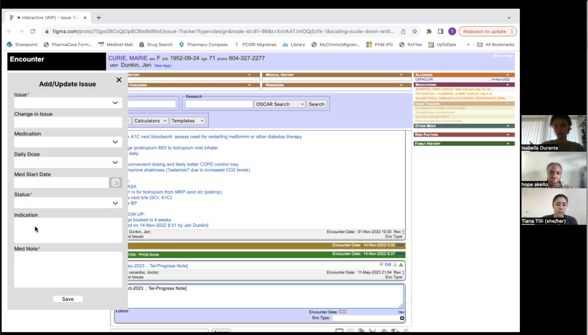
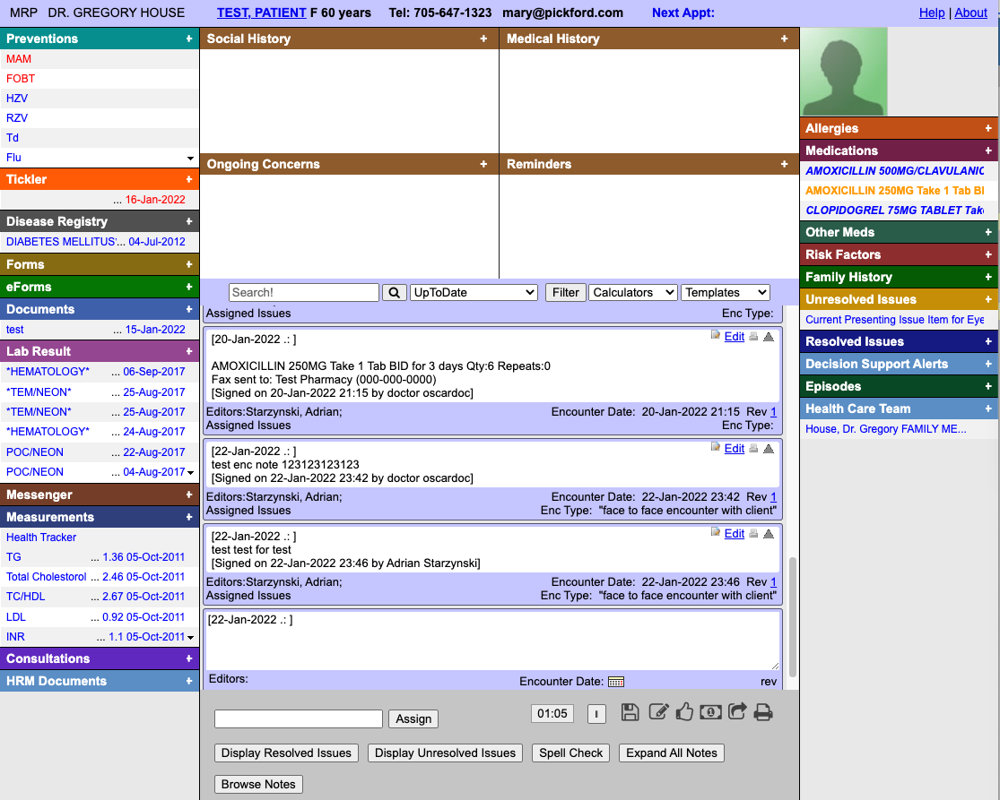
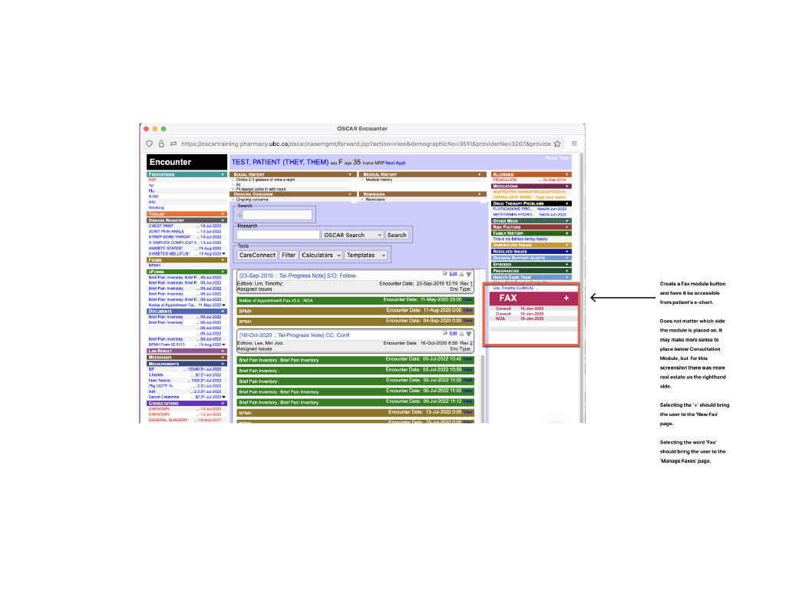
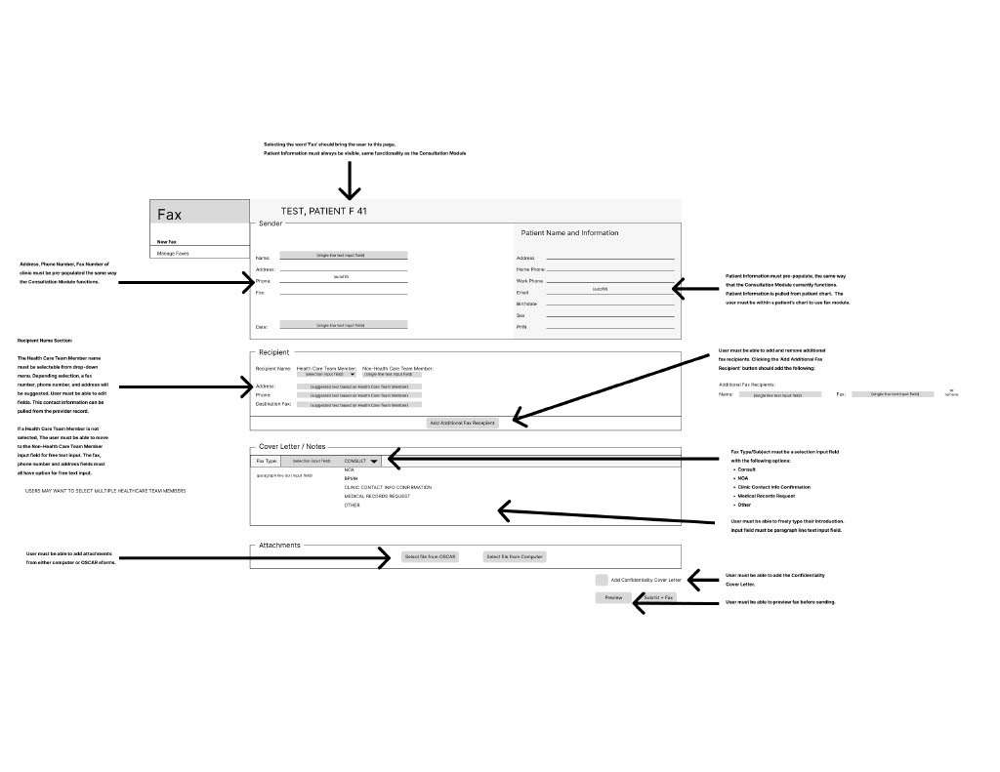
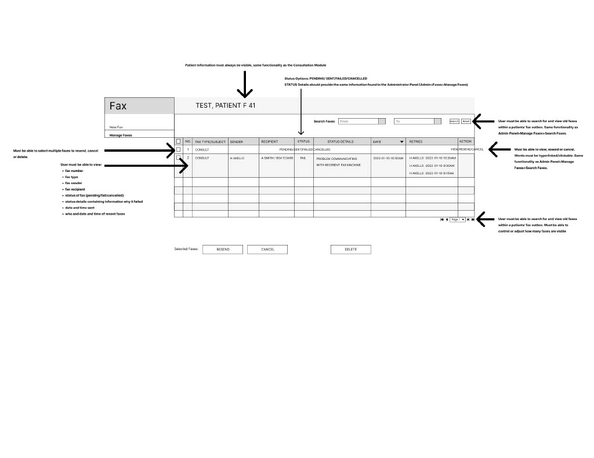
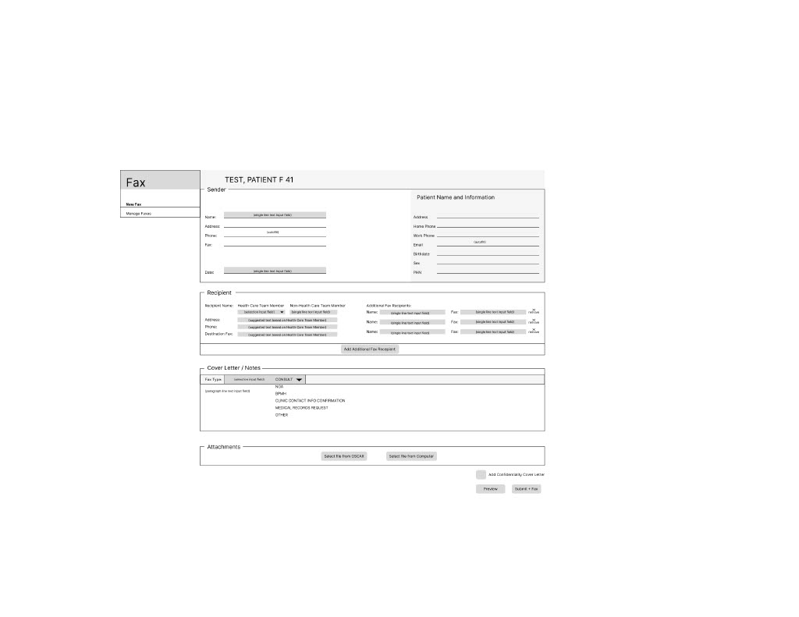

Context
Staff at the UBC Pharmacists Clinic relied on OSCAR, an open-source electronic
medical records system (EMR), but often faced usability issues that slowed down their workflow.
Objectives
Identify key pain points in day-to-day operations, redesign EMR interface
components, and provide leadership on technology integration and process improvement initiatives.
Approach
User Shadowing: observed clinician and medical office assistants' use of OSCAR
during appointments, noting
navigation issues.
User Interviews: conducted interviews with clinicians after appointments to
have them map
their daily
EMR workflows, capture frustrations, and collaboratively sketch ideas.
Interface Redesign: ideated and refined solutions in Figma; simplified
cluttered layouts,
improved
visual hierarchy, and proposed clearer navigation for key clinical tasks.


User Testing & Feedback: gathered clinician and developer feedback through
prototype
walkthroughs, refined designs based on insights. Acted as a bridge between clinicians and
developers; advocated for clinician
needs while also communicating technical constraints.
Design Handoff: finalized mockups, delivered design handoff documentation,
and reviewed implementation details with developers.
Project Coordination: communicated progress and system updates with the team
and
coordinated with
developers to
track and resolve reported issues.
Outcomes
Design rationales
Concept sketches
Figma mock ups



Results
Eight major UI enhancements to the OSCAR EMR system over two years,
directly informed by clinic staff and developer feedback.
